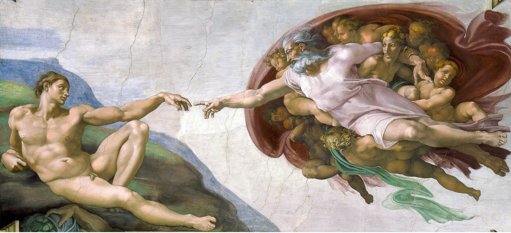
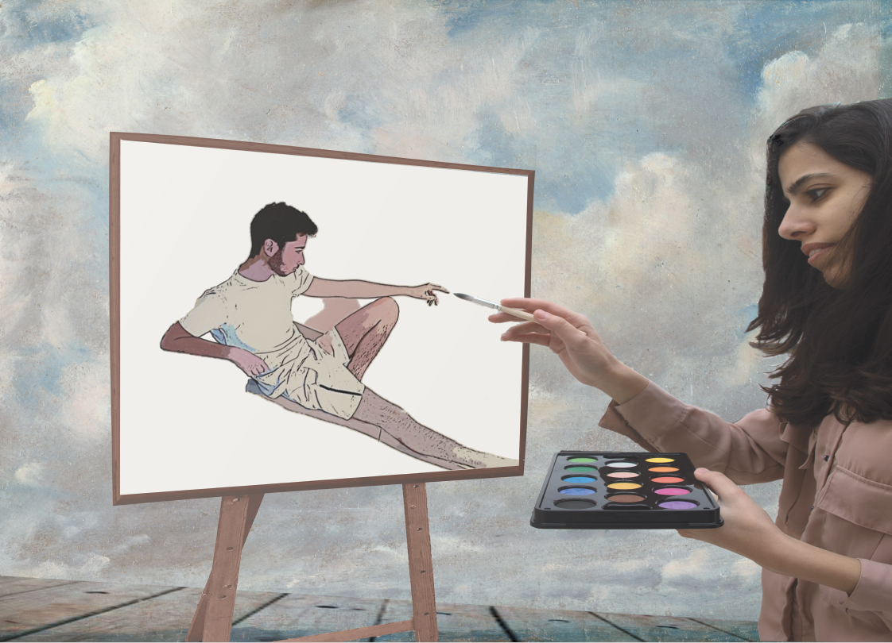

תקשורת חזותית + עיצוב גרפי
פרויקט הסיום שלנו בשני הקורסים "מבוא לתקשורת חזותית" ו"עיצוב גרפי" היה לקחת השראה מיצירה קיימת ולתת לה משמעות חדשה
זאת תוך שימוש בעקרונות העיצוב שלמדנו בקורס מבוא לתקשורת חזותית, ותוך שימוש בתוכנת ה- Photoshop עליה למדנו בקורס עיצוב גרפי.
העבודה הוגשה למרצות: רותם ישראל ונוהר רז-פוגל.
העבודה נעשתה יחד עם אריאל פרידמן.
העבודה המקורית

היצירה עליה התבססנו היא "בריאת האדם" של מיכאלנג'לו,
לקחנו את עקרון היצירה והבריאה שקיים ביצירה והתייחסנו אליו בעבודה שלנו.
העבודה שלנו

בעבודה שלנו ניתן לראות ציירת המציירת אדם והמכחול שלה יחד עם היד של הדמות יוצרים את אותה קרבה שקיימת בין אדם ודמות האלוהים ביצירה של מיכאלנג'לו.
כפי שהאל נותן חיים באדם כך גם הצייר נותן חיים ביצירה.